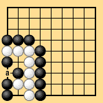
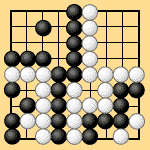
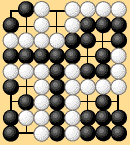
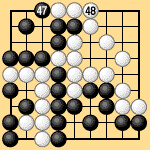

| 6.9 Unstable Seki: Ko |
|---|
| In Dia. 6-14-1 Black can leave the position as a seki, or start a ko. Questions accordingly arise if there are ko threats that White cannot remove, such as an additional seki or bent four in the corner. Note also that when Black chooses seki, under area rules III or territory rules I Black gets one point at 'a.' Traditional territory rules do not award points in a seki, so a one-point difference arises. |
|  |
| Dia. 6-14-1 |
|---|
| When this position is combined with a bent four in the corner as in Dia. 6-14-2, to resolve the bent four white must capture actually it, and since he cannot remove the black ko threat in the bottom left, an exchange may take place. Alternatively, Black may start the ko in the bottom left. In Dia. 6-14-3 Black has a ko threat that White cannot remove, so it is possible for Black to start a ko, which must naturally be resolved by actual play. These are problems that might arise after the end of the game in traditional territory rules. |
|  |  |
| Dia. 6-14-2 | Dia. 6-14-3 |
|---|
|
A proposed revision of the Nihon Kiin's rules would have the players continue playing after the end of the game until the position is resolved, then restore the board to the state at the end of the game. Suppose, then, that the outcome of the game is decided by a major exchange that takes place after the end of the game. After this has been confirmed, it makes no sense for the players restore the earlier ending position. But if they do not restore that ending position, that proves that it was not the end of the game. In either case this proposed rule is completely unnatural and impossible to approve of, because it destroys the elegant beauty and logic of the rules of go. In Dia. 6-14-4, by traditional territory rules the bottom left corner is a seki and the game is a draw. Under territory rules I the game might end as follows: Black 47, White 48, Black 49 passes, White 50 passes (preliminary end), Black 51 connects in the bottom left, White 52 passes (handing over a stone), Black 53 passes (end of the game). Black wins by one point, showing that he gets one point in the bottom left. Under area rules III Black also wins by one point. |
|  |
| Dia. 6-14-4 |
|---|